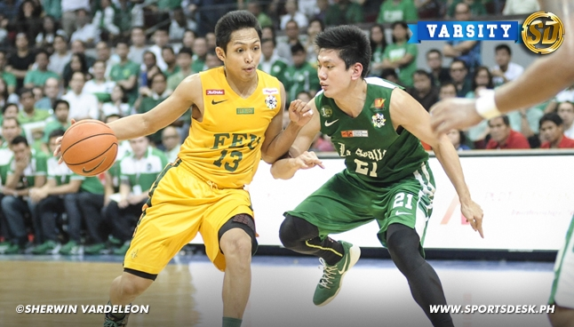

background

La Salle stays alive in Final Four
De La Salle University simply refused to die on Saturday, manhandling Far Eastern University (FEU) with authority as the defending champion Archers lived one more day in the Final Four of the 77thUAAP men’s basketball tournament at the Mall of Asia Arena.
Playing with a foot in the grave, the resurgent Archers chewed FEU’s twice-to-beat advantage behind main man Jeron Teng to prevail, 94-73, and force a do-or-die match on Wednesday.
Teng scored a team-high 25 points, including 11 in the third where La Salle erected an imposing 61-42 lead that doused the awestruck Tamaraws’ repeated comebacks entering the fourth quarter.
“We really want to bounce back. We thought that we have to give it to the seniors,” said Teng, who also had seven rebounds, three assists in the contest, to offset the Archers' loss in the twice-to-beat playoff against FEU last Sunday.
“It’s too early for them to end their UAAP careers. We want them to play more games.”
With the graduating Norbert Torres and Arnold Van Opstal imposing their might underneath, the Archers controlled the paint even as FEU sagged on them, leaving La Salle’s shooters practically open from the perimeter and beyond.
“They (FEU) were clogging the paint too much I just told the players to make their read. If they open for the three they just go ahead and take it,” La Salle coach Juno Sauler said after the Archers won their first game against the Tamaraws this season.
“I just told them (players) to make the most of the opportunity and just play our best.”
La Salle had a 54-41 edge in rebounds while scoring 36 perimeter points on top of an 8-of-20 clip from three-point range.
Almond Vosotros and rookie Julian Sargent nailed three triples each while Teng had two. Sargent highlighted La Salle’s first quarter splurge by going 3-of-3 to push the Archers up 19-9.
But Mac Belo, who logged in a new career of 32 points, and Mike Tolomia spearheaded FEU’s fightback in the second period to cut the deficit, 27-31, at the half.
The Archers however greeted the third with an 11-4 attack to rebuild their double-digit lead, 43-31.
FEU on the other hand lapsed into early penalty before coach Nash Racela and Ron Dennison were slapped a technical foul each, allowing La Salle to go 9-of-14 from the stripe and erect a 19-point bubble heading into the payoff period.
Vosotros and Teng tightened La Salle’s momentum lock in the final quarter as they presided over a decisive 13-5 endgame salvo to put the contest beyond reach, 85-62, with still 3:05 left.
Except for Belo, none of the Tamaraws managed to finish in double figures as Tolomia wound up with just seven points on a measly 2-of-14 shooting in 32 minutes of play. Roger Pogoy also had a miserable outing, finishing with just two points.
The scores:
DLSU (94) – Teng 25, N.Torres 18, Vosotros 17, Sargent 11, Perkins 8, Van Opstal 4, Montalbo 3, T.Torres 3, Rivero 2, Salem 2, Mustre 1, Andrada 0.
FEU (73) – Belo 32, Tolomia 7, David 7, Inigo 6, Tamsi 6, Jose 5, Cruz 4, Pogoy 2, Hargrove 2, Ugsang 2, Lee u 0, Dennison 0, Escoto 0, Delfinado 0, Denila 0.
Quarter scores: 24-14, 34-27, 63-47, 94-73.